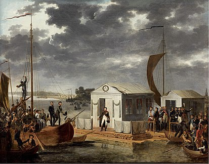
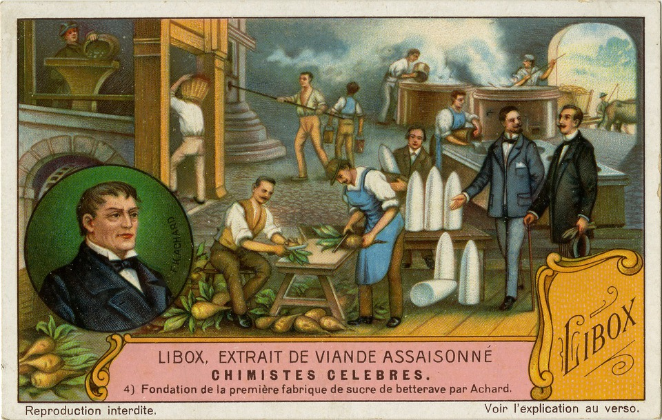
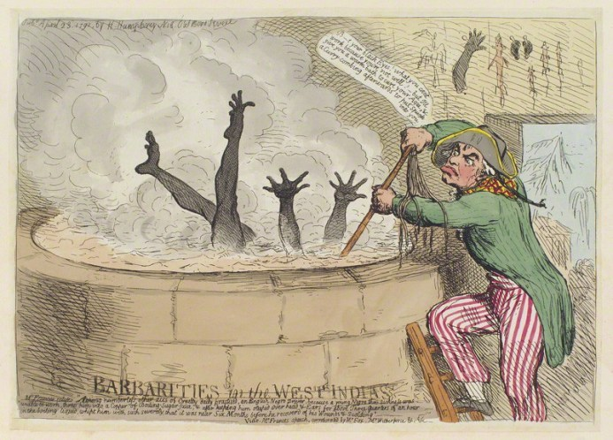
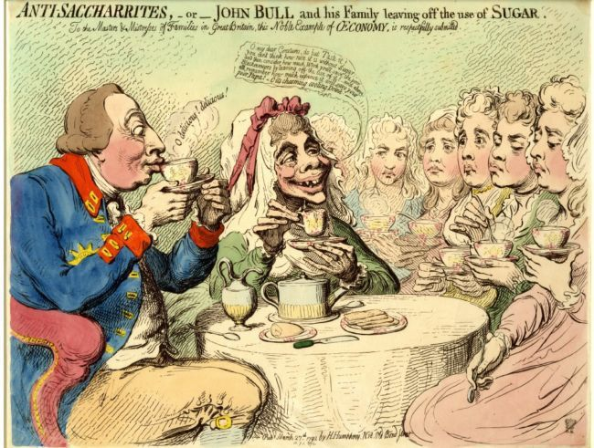
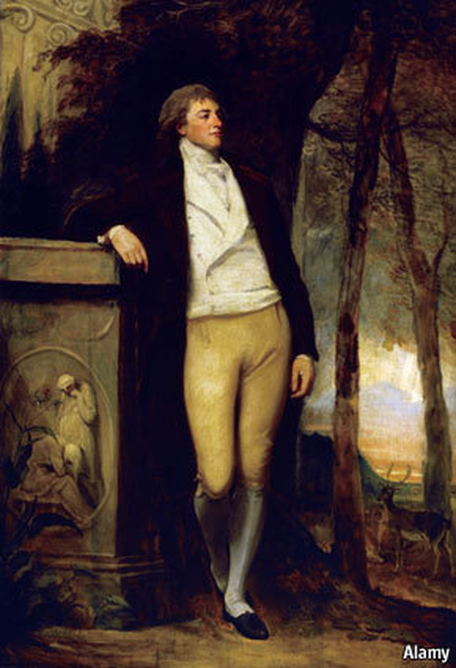
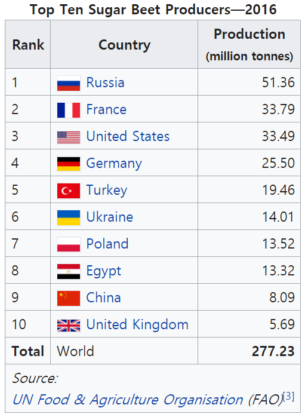

달콤씁쓸한 결말 - 설탕과의 전쟁 (마지막편)
게시: 2018-05-21T06:00:00+09:00
하지만 본격 산당국(産糖國)의 꿈이 현실화되기 전에 전쟁의 물결이 닥쳤습니다. 아카르트의 든든한 후원자이던 빌헬름 3세가 알고보니 멍청이었던 것입니다. 그는 입만 살았던 강경파의 주장대로 겁도 없이 나폴레옹에게 먼저 싸움을 걸었고, 나폴레옹은 '내가 바로 나폴레옹이다'라는 것을 예나-아우어슈테트 전투에서 빌헬름 3세에게 혹독하게 교육시켜 주었습니다. 이 전쟁은 아카르트의 농장과 정제소까지 집어 삼켰습니다. 1806년 밀물처럼 쳐들어온 프랑스군은 아카르트의 농장과 공장을 불태워버렸던 것입니다. 아카르트는 모든 것을 잃고 실의에 잠겼습니다. 사탕무 정제소가 사실 문제가 아니었습니다. 프로이센은 온 나라가 탈탈 털렸고, 나폴레옹에게 알짜배기만 골라 영토를 절반이나 빼앗기고 덤으로 막대한 전쟁 배상금까지 물어내야 했습니다. 프로이센에게는 희망이 전혀 보이지 않았습니다. 희망을 걸었던 러시아까지 1807년 틸지트 조약으로 나폴레옹과 손을 잡으면서, 프로이센은 영원히 유럽의 3류 국가로 전락하는 듯 했습니다. 이런 상황에서 아카르트의 재기는 불가능해 보였습니다.

(누군가에게는 잔치집, 누군가에게는 초상집. 나폴레옹과 알렉산드르 1세의 1807년 틸지트 조약 장면입니다.)
하지만 위기는 새로운 기회를 주는 법입니다. 나폴레옹은 예나-아우어슈테트에서 프로이센 군을 격멸시키고 베를린에 입성한 뒤인 1806년 11월 21일, 대륙봉쇄령을 발표했습니다. 이 조치로 인해 영국 선박이 실어오는 영국 및 그 식민지 제품들이 유럽 대륙에 발붙이는 것이 어려워졌지요. 이에 대응하여 영국도 추밀원 명령을 통해 프랑스 및 그 동맹국 해안을 역봉쇄했는데, 그러자 나폴레옹도 질세라 더 강력한 조치인 1807년 밀라노 칙령을 발표했습니다. 여태까지는 원산지가 세탁된 영국 및 그 식민지 제품들이 중립국 선박을 통해서나마 유럽에 들어올 수 있었는데, 이젠 그마저 막히게 된 것입니다.
이로 인해 여러가지 현상과 문제가 쏟아져 나왔습니다. 일부 지역의 일부 산업은 강력한 경쟁자였던 영국이 시장에서 사라지면서 부흥하기도 했으나 대부분의 유럽인들은 이로 인해 삶이 피폐해졌습니다. 특히 설탕 ! 사람을 중독시키는 음식은 많습니다만, 술이나 커피나 담배나 홍차나 김치나 치즈나 첫맛은 '뭐 이런 맛이 다 있어 ?'라며 거부감을 느끼는 것이 대부분입니다. 그러나 인류 역사상 설탕처럼 남녀노소를 가리지 않고 처음 한번 맛을 보자마자 모두 좋아하게 된 음식은 정말 드물었습니다. 그동안 설탕에 중독되었던 유럽인들은 설탕이 식탁에서 사라지자 그저 아쉬움이라고 표현하기에는 너무나 절실한 갈증과 욕망을 느꼈습니다.
그런 중독 현상에서 오는 갈증과 욕망은 자연스럽게 아카르트의 사탕무 설탕으로 시선을 돌리게 되었습니다. 대륙봉쇄령으로 인해 유럽 내 설탕 값이 치솟으면서, 다시 아카르트에게 지원이 쇄도하며 1810년 그는 작은 규모나마 다시 사탕무 설탕 정제소를 세울 수 있었습니다. 이 공장은 곧 보헤미아와 아우크스부르크 등으로 들불처럼 퍼져 나갔습니다. 아카르트라는 프로이센 사람이 무에서 설탕을 뽑아낸다는 신기한 소식은 곧 나폴레옹의 귀까지 들려왔습니다. 스스로를 대단한 학자로 여겼던 그는 곧 과학자들로 구성된 파견단을 슐레지엔으로 파견하여 아카르트의 정제소를 조사했습니다. 이들은 돌아와서 그 복제판인 작은 정제소 2개소를 파리 인근에 지었는데, 이들은 아무래도 재료 품질이나 경험치에서 부족한 면이 있었는지 상용적인 성공을 거둘 정도의 성과를 내지는 못했습니다. 그러나 저 빌어먹을 영국놈들에게 손을 벌리지 않고도 설탕을 뽑아낼 수 있다는 증거를 본 나폴레옹은 크게 흥분했습니다. 바로 다음해인 1811년 나폴레옹은 칙령을 내려 100만 프랑(현재 가치로 약 160억원)을 들여 설탕 학교를 세우고 프랑스에서도 2만8천 헥타아르의 농토를 사탕무 재배에 할당하여 대대적으로 생산하도록 했습니다. 또한 이제 새롭게 태동하는 프랑스 설탕 산업을 보호하기 위해, 여태까지 면허장 제도 및 일부 중립국을 통해 수입하던 카리브산 설탕의 수입을 1813년부터는 완전 금지했습니다.

(1865년 런던에서 설립된 리빅 고기 수프 액기스 회사 Liebig Extract of Meat Company의 불어판 기념 엽서입니다. 다소 엉뚱하지만, 여기에 아카르트의 사탕무 설탕 정제소의 모습이 그림으로 담겨 있습니다. 아마 같은 식품 회사들의 역사를 그림으로 보여주는 시리즈물이었나 봅니다. 설명에는 Fondation de la première fabrique de sucre de betterave par Achard 즉 아카르트에 의한 최초의 사탕무 설탕 제조 공장 설립이라고 되어 있습니다.)
이렇게 대단한 업적을 가능케 만든 아카르트에게는 어떤 금전적 혜택이 주어졌을까요 ? 당시엔 프랑스 대혁명과 함께 프랑스에 이미 특허권 제도가 도입된 상태였습니다. 나폴레옹이 레종도뇌르 훈장과 함께 그에 따른 두둑한 연금이라도 주었을까요 ? 아니었습니다. 비록 그때 당시는 프로이센이 프랑스에게 호되게 당한 동맹국으로서 우방국이긴 했지만, 나폴레옹에게 있어 프로이센은 어디까지나 견제 대상이었습니다. 나폴레옹은 아카르트에게 어떠한 금전적 보상도 하지 않았고, 아카르트는 계속 경제적 어려움을 겪어야 했습니다.
정작 그에게 보상을 제시했던 것은 엉뚱하게도 영국 설탕 상인들이었습니다. 카리브산 설탕에 대해 독점적 지위를 만끽하던 영국의 거대 설탕 상인들은 아카르트가 사탕무로부터 설탕을 만드는 방법을 완성했다는 소식을 듣자마자 나폴레옹이나 그 누구보다도 먼저 찾아왔습니다. 이들은 돈이 궁하던 아카르트에게 무려 20만 탈러(현재 가치로 약 21억원)의 금전적 보상을 제시했습니다. 훨씬 더 생산성이 좋은 카리브 해의 노예 설탕 농장을 가지고 있던 그들이 왜 사탕무 특허권을 사려 했을까요 ? 그들이 원했던 것은 특허권이나 독점 생산권이 아니라, 아카르트에게 '사탕무 실험은 대실패였다, 역시 유럽에서 설탕을 생산하는 것은 불가능하다'라고 발표해주는 것이었습니다. 즉, 그들은 카리브산 설탕의 경쟁자를 없애고 싶었던 것이지요. 그들에게 카리브해의 설탕 플랜테이션은 요즘의 유전과도 같은 부의 창출원이었거든요. 17세기 말 기준이긴 합니다만, 영국령 바베이도스(Barbados)의 81 헥타아르(24.5만평)의 사탕수수 농장과 그에 딸린 정제소면 영국 본토의 백작 가문과 맞먹는 부를 쏟아낸다고 할 정도였으니까요.

(영국이 값싼 설탕을 카리브해에서 가져올 수 있었던 것은 뜨거운 태양과 쏟아지는 비 외에도 흑인 노예 덕분이었습니다. 많은 흑인 노예들이 잔혹한 조건에서 노동에 시달리다 죽어가야 했습니다. 극단적으로 묘사하자면, 영국이 아프리카에서 흑인 노예들을 실어다 카리브해에 갈아넣으면 그것이 설탕이 되어 나오는 셈이었습니다.)

(그런 설탕 무역의 비윤리적인 면 때문에, 영국 내에서도 자국의 설탕 상인들에 대한 비난 여론이 컸고, 설탕없이 홍차를 마시자는 운동이 있을 정도였습니다. 이 풍자화에서 영국 왕과 여왕이 공주들에게 '설탕 없이 차를 마시니 아주 맛이 좋구나' 라고 이야기하는데, 공주님들의 표정은 과히 좋지 못하네요.)

(17~18세기 영국에서 카리브해의 설탕 농장을 통해 떼돈을 번 사람들을 sugar barons 라고 부릅니다. 물론 이것도 원래 밑천이 있어야 할 수 있는 장사였고, 실제로 귀족인 경우도 꽤 있었습니다. 대표적인 설탕 귀족으로는 이 그림 속 주인공인 William Beckford와 함께 James Drax, Christopher Bethell-Codrington 등이 있습니다. 이 그림 속 주인공인 벡포드는 말년에 모든 재산을 잃었지만, 크리스토퍼 코드링턴 같은 경우는 하원의원직을 유지하며 거듭된 노예 폐지 법안에 집요하게 반대표를 던졌습니다.)
아카르트의 고결함이 가장 빛났던 것은 바로 이 순간이었습니다. 그는 설탕이 부유한 상인들의 배를 불리는 수단이 되어서는 안 되며, 온 인류가 부담없이 즐길 수 있는 음식이 되어야 한다고 생각했습니다. 그는 탐욕스러운 영국 자본의 유혹을 거절하고, 사탕무 재배법과 설탕 제조법을 사람들에게 아낌없이 가르쳐주었습니다. 그 덕분에 나폴레옹이 파견한 과학자들도 아카르트로부터 그 제조법을 그대로 배워올 수 있었던 것입니다.
그 결과, 유럽에서의 사탕무 설탕 생산량은 꾸준히 늘어났습니다. 사탕무 설탕 생산량은 나폴레옹 재위 기간 동안에 카리브산 설탕을 압도할 만한 규모에는 크게 미치지 못했는데, 이는 당시의 농업 생산량이 충분치 않았기 때문이었습니다. 아직 유럽은 굶주림이 존재하던 곳이었거든요. 사탕무보다는 당장 배를 채울 밀과 감자를 키우는 것이 더 급했기 때문에 사탕무 재배에 많은 토지를 할당할 수 없었던 것입니다. 그러나 화학 비료 등에 의해 단위 면적당 생산량이 획기적으로 늘어나면서 사탕무 재배와 사탕무 설탕 생산량도 크게 늘었습니다. 1840년 사탕무 설탕은 전세계 설탕 생산량의 5% 정도만 차지했습니다. 그러나 1880년 경에는 그 비율이 무려 50%로 늘어났습니다. 사탕무의 전성시대가 끝난 것은 제1차 세계대전 때였습니다. 유럽 대륙이 전쟁의 회오리에 휘말리면서, 아무래도 당장 군인들을 먹일 밀과 콩, 가축 사료용 옥수수 등의 재배가 더 시급했던 것이 원인이었지요. 그러나 지금도 전세계 설탕 생산량의 20%는 사탕무 설탕이 차지하고 있습니다. 지금도 러시아, 프랑스, 미국과 독일 등에서는 사탕무 재배가 활발합니다.

(현대 전세계의 사탕무 생산량입니다. 아카르트 덕분에 추운 지방인 러시아에서도 설탕 생산이 가능합니다.)
이렇게 유럽의 농업과 설탕 생산에 지대한 공을 세운 아카르트는 결국 그 공로를 인정받아 행복한 말년을 보냈을까요 ? 항상 그렇지만, 아니었습니다. 그의 공법을 채택한 유럽 각지에서 사탕무 설탕 정제소가 계속 늘어났지만, 유럽인들 모두를 위해 모든 것을 아낌없이 공개한 아카르트 소유의 정제소들은 그와 반비례하여 계속 재정난에 시달려야 했습니다. 특히 나폴레옹의 몰락 이후 노예 노동으로 생산된 값싼 카리브산 설탕이 영국 상인들에 의해 유럽으로 쏟아져 들어오면서, 그의 사탕무 정제소들은 버틸 수가 없었습니다. 워털루 전투가 벌어지던 1815년, 그의 공장은 결국 파산을 선언해야 했고, 다시 6년이 지난 1821년 아카르트는 그가 사탕무 사업에 인생을 바친 슐레지엔 볼라우(Wohlau)에서 빈곤 속에 생을 마쳐야 했습니다.
Source :
https://en.wikipedia.org/wiki/Franz_Karl_Achard
https://en.wikipedia.org/wiki/Sugar_beet
https://en.wikipedia.org/wiki/Franz_Karl_Achard#/media/File:Liebig_Company_Trading_Card_Ad_01.12.005_front.tif
https://janeaustensworld.wordpress.com/2011/03/14/cesar-picton-wealthy-merchant-and-freed-man-the-regency-era/
https://www.economist.com/node/21525808
https://en.wikipedia.org/wiki/Christopher_Bethell-Codrington